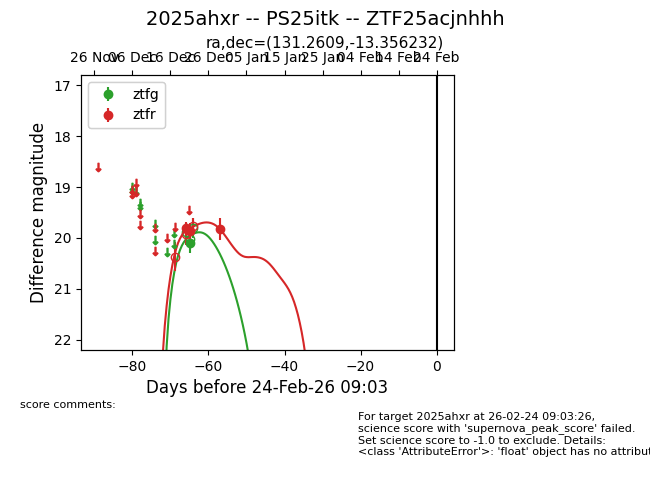
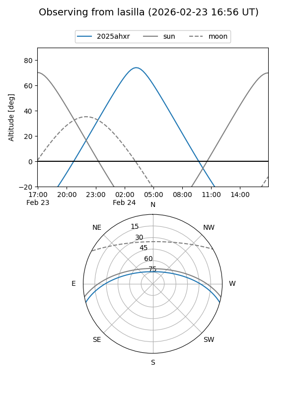
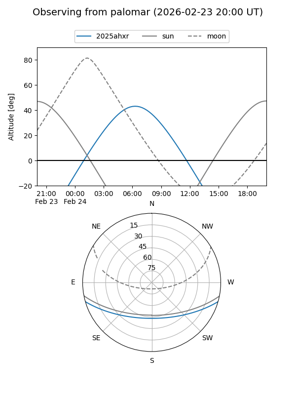

2025ahxr
Target 2025ahxr at 2025-12-31 17:00
Aliases and brokers:
FINK:
Lasair:
ALeRCE:
TNS:
YSE:
alt names
ZTF25acjnhhh (ztf,fink_ztf)
2025ahxr (tns,yse)
PS25itk (panstarrs)
Coordinates:
equatorial (ra, dec) = 131.2609,-13.35623
equatorial (HMS+DMS) = 08:45:02.61,-13:21:22.44
galactic (l, b) = (238.8880,+17.85053)
Flags:
Photometry:
last ztfg=20.10, ztfr=19.82
1 ztfg, 3 ztfr detections
Lightcurve

Visibility


Additional plots